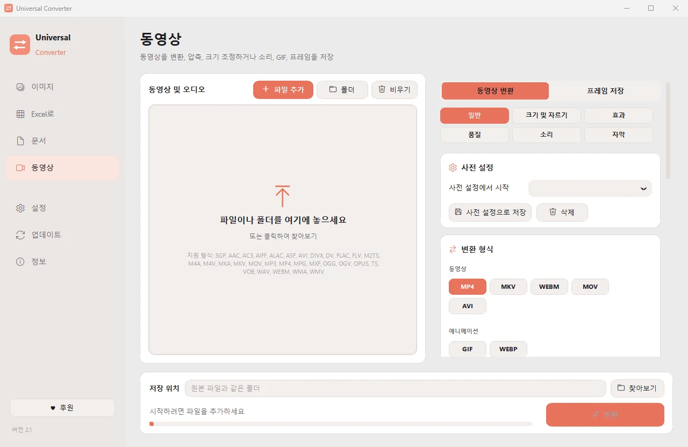

동영상의 소리를 MP3로 저장
동영상에서 노래, 강연, 음성 메시지를 화면 없이 남겨 두세요. 원하는 부분만 먼저 잘라 낼 수도 있습니다. Android 앱은 소리를 M4A로 저장합니다.
무료 · Windows 10, 11 (64비트) · 바이러스 검사 결과
Mac용 다운로드 (베타) Apple 실리콘, macOS 12 이상
Android용 다운로드 Android 10 이상
방법
- Universal Converter를 열고 왼쪽에서 동영상을(를) 선택하세요.
- 파일이나 폴더를 창으로 끌어다 놓거나 '파일 추가'를 누르세요.
- '변환 형식'에서 MP3(또는 M4A, FLAC, WAV, OGG, Opus)를 고르세요.
- '변환'을(를) 누르세요. 새 파일은 원본 옆이나 선택한 폴더에 저장됩니다.

왜 오프라인인가요?
Universal Converter는 내 기기에서 작업합니다. 파일은 비공개로 유지되고, 큰 파일도 문제없으며, 인터넷 연결 없이도 작동합니다.